Как крысы избегают черных лебедей и ищут джекпоты
{kind=link}
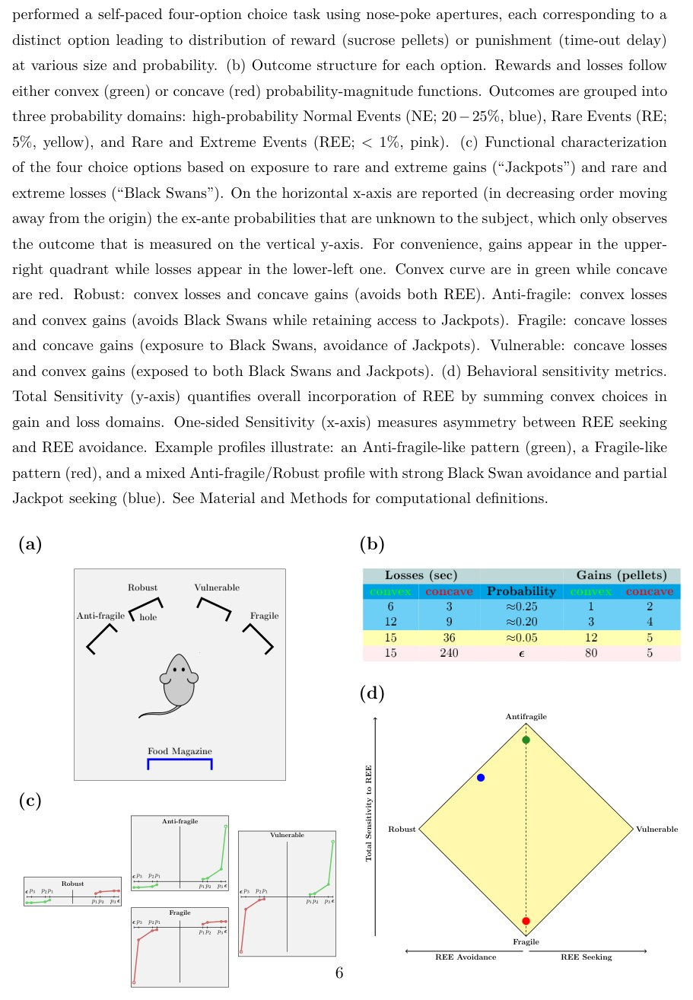
Большинство экспериментов проверяют решения в условиях частых и предсказуемых событий. Однако реальная жизнь полна маловероятных, но разрушительных или невероятно выгодных исходов. Нейробиологи проверили, как грызуны справляются с такими редкими событиями. Оказалось, что мозг разделяет рутину и крайности, выстраивая особую стратегию выживания.
Главное
- Крысы избегают редких наказаний ценой частых мелких потерь.
- Модель с раздельными весами лучше объясняет выбор животных.
- Мозг обрабатывает хвосты распределения отдельно от рутины.
Подробнее
В классических поведенческих тестах на принятие решений (decision-making) вероятность исходов обычно превышает десять процентов. Авторы работы разработали экспериментальную и вычислительную среду для оценки того, как крысы реагируют на редкие события с вероятностью менее одного процента и отклонением от среднего более чем на десять стандартных отклонений (REE — rare and extreme events). В тесте на четырехрукого бандита (four-armed bandit task) животные выбирали между опциями с сахарными пеллетами в качестве наград и задержками времени в качестве наказаний.
Поведение грызунов показало выраженную асимметрию. Крысы практически полностью избегали редких и экстремальных наказаний, которые можно назвать «черными лебедями», но лишь частично стремились к редким крупным выигрышам («джекпотам»). Ради этого животные были согласны терпеть более частые мелкие потери и довольствоваться скромными наградами. Стандартные модели обучения с подкреплением (Q-learning) не смогли объяснить такую стратегию.
Исследователи применили дополненную модель, где редкие события взвешиваются отдельно от обычных. Это показало, что мозг грызунов обрабатывает информацию из центра распределения исходов и из его хвостов независимо друг от друга. Подобное разделение позволяет животным гибко настраивать поведение в непредсказуемой среде, защищая себя от катастроф.
Ограничения
Работа выполнена на лабораторных крысах в искусственной среде, поэтому переносить эти выводы на сложные социальные или экономические решения людей пока нельзя.
Подробный разбор статьи
Резюме
Критическим аспектом методологии является то, как подопытные животные воспринимали вероятности подкрепления на практике («ex-post»), в отличие от запланированных («ex-ante») значений. Поскольку использовались фиксированные последовательности, реальный опыт животных мог существенно отличаться от теоретической схемы. Существует вероятность, что некоторые особи вообще не сталкивались с редкими экстремальными событиями («черными лебедями») для конкретных альтернатив. Согласно Таблице S11, как минимум четыре животных испытали такой исход лишь единожды за всю сессию. Более того, если выбор определенной опции случайно совпадал исключительно с 10-м или 60-м шагом, животные могли сталкиваться с редким событием систематически.
Таблица S11. Ex-posttotaloutcomesforeachofthe20ratsoverthefinal41sessionssummarystatistics.Eachrowrepresentsoneratandthecolorcodesindicatetheprofileof theanimal,asinFigure2
{kind=link}
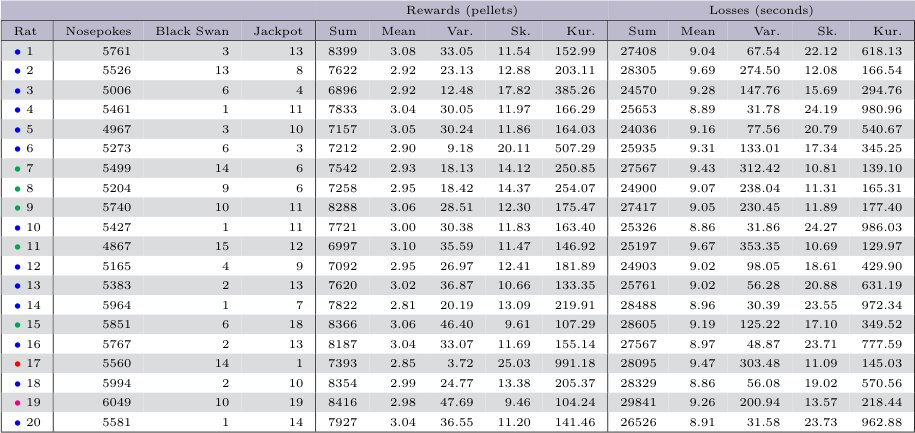
Текущие данные в Таблице S11 отражают лишь общие показатели, не детализируя исходы по конкретным вариантам выбора для каждой крысы. Для прояснения ситуации необходима детальная таблица, показывающая частоту выбора каждого из четырех вариантов и распределение 6–8 возможных исходов. Кроме того, жесткая привязка редких исходов к 10-й или 60-й активации лишает их случайности. Хотя авторы утверждают, что животные не выучили эту закономерность, прямых доказательств в тексте не приводится. В ответ на это авторы ссылаются на свои подробные разъяснения, данные в первом раунде рецензирования.
Осторожно
Ограничение дизайна: фиксация редких событий на определенных шагах (10-м и 60-м) делает их предсказуемыми, а малая частота столкновения с ними (у 4 животных — всего 1 раз, согласно Таблице S11) ставит под сомнение адекватность оценки их влияния на поведение.
Другой важный вопрос касается представления данных о выборе. В основных материалах эти показатели избыточно обработаны и представлены в виде сумм и разностей, тогда как первичные частоты выбора четырех вариантов отсутствуют. Наиболее информативной является правая часть Таблицы S4, анализ которой показывает, что около 90% всех реакций (особенно у наиболее распространенных «синих» крыс) приходилось на «антихрупкий» (anti-fragile) и «робастный» (robust) варианты.
Однако именно эти два варианты на этапе обучения были сопряжены с наиболее предпочитаемыми пространственными лунками (с. 26). Это создает неустранимую коллизию: невозможно однозначно определить, обусловлен ли выбор распределением наград или же банальным пространственным предпочтением лунок. Авторы парируют это замечание ссылкой на Рисунок 8 (раздел «Материалы и методы»), демонстрирующий динамику поведения между обучающей и финальной сессиями. Согласно этим данным, более половины крыс изменили структуру своего выбора более чем на 30% в финальных тестах по сравнению с обучением, что указывает на перестройку поведения, а не на простую фиксацию пространственной привычки.
{kind=link}
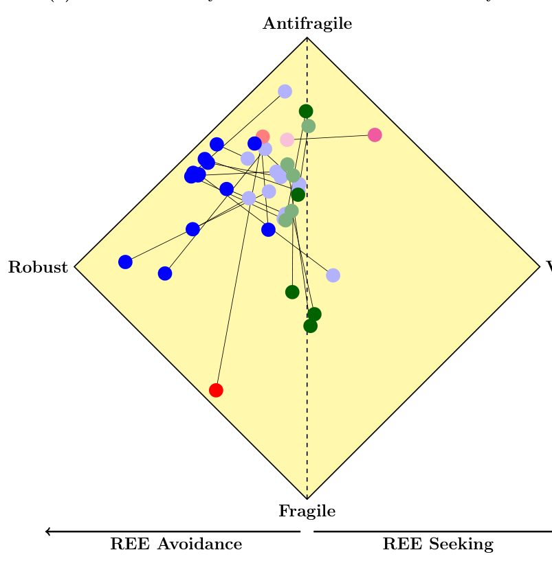
Важно
Главный вывод: несмотря на возможное пространственное смещение лунок, более 50% крыс изменили свои предпочтения более чем на 30% в финальной сессии по сравнению с обучением (Рис. 8), что свидетельствует о гибкости выбора в ответ на распределение наград.
Рецензент указывает на недостаточную детализацию процедур статистического вывода. В частности, в тексте отсутствуют значения степеней свободы и показатели величины эффекта (effect sizes), а описание примененных тестов (например, бутстрэппинга) носит крайне ограниченный характер. Ситуация осложняется отсутствием открытого кода и сырых данных (в дополнительных материалах представлены лишь агрегированные сводные показатели). Кроме того, исследование не проходило предварительную регистрацию (pre-registration), что оставляет авторам слишком много «степеней свободы» при анализе и повышает риск переоценки случайных закономерностей, обнаруженных post-hoc. Рецензент также ставит под сомнение обоснованность разделения животных на многочисленные подгруппы для последующих сравнений, которые выглядят незапланированными заранее.
В ответ на это авторы отмечают, что данное замечание полностью дублирует пункт (6) из предыдущего отзыва, на который они уже предоставили исчерпывающий и развернутый ответ в первом раунде рецензирования, в связи с чем они не видят необходимости повторяться для экономии места.
Осторожно
Отсутствие предварительной регистрации протокола исследования и детальных статистических показателей (степеней свободы, величины эффекта) снижает прозрачность выводов и затрудняет независимую проверку результатов.
Второй важный аспект касается анализа поведения после редких экстремальных событий на Рис. 4 (с. 12). Авторы оценивали предпочтения в окне из 10 испытаний до и после такого события. Согласно психологической литературе (например, Plonsky et al., 2015), у людей в таких случаях наблюдается «волновой эффект новизны» (wavy recency effect): кратковременное избегание редкого исхода (отрицательная новизна) сменяется его активным преследованием (положительная новизна). Однако в текущем дизайне выбор альтернативы с редким исходом объединяется с другими вариантами, что искажает реальную картину. Использование широкого 10-раундового окна сглаживает эти колебания. Рецензент предлагает провести детальный пошаговый (trial-by-trial) анализ внутри этого интервала.
{kind=link}
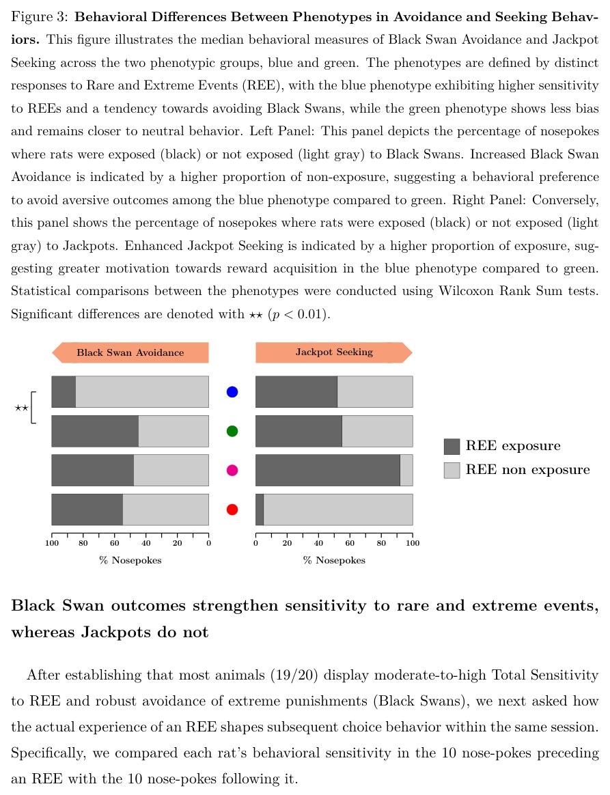
{kind=link}
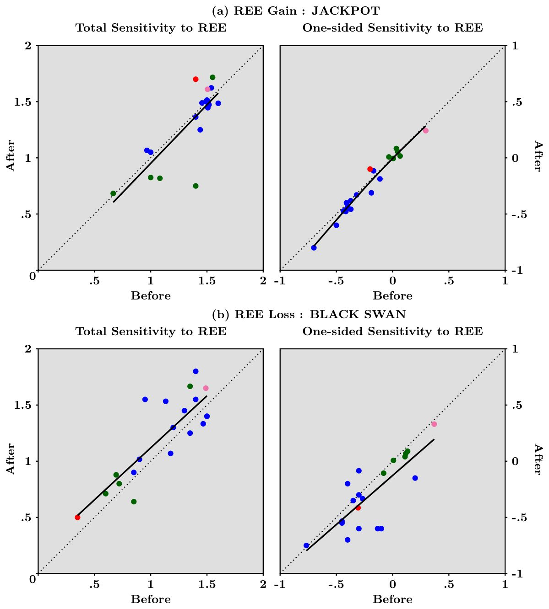
Авторы вновь сослались на свой подробный ответ на пункт (7) из первого раунда, отказавшись от повторных разъяснений.
Пояснение
Волновой эффект новизны (wavy recency effect) описывает сложную динамику выбора после редкого события: сначала субъект избегает сделавшего выбор варианта, а затем начинает активно его выбирать.
Рецензент обращает внимание на методическую особенность (с. 31): распределение вариантов выбора по физическим локациям не было случайным или сбалансированным. Напротив, один из ключевых вариантов намеренно размещался в изначально предпочитаемом животными месте. Это создает неустранимое систематическое смещение (bias) в пользу конкретной альтернативы и искажает результаты последующего анализа предпочтений. Подтверждением этого опасения служит Таблица S4, где подавляющее большинство реакций животных сгруппировано вокруг двух наиболее предпочитаемых во время обучения вариантов.
Авторы ответили, что этот вопрос (пункт 8) уже был детально разобран в их ответах на первом этапе рецензирования.
Важно
Неслучайное пространственное распределение альтернатив при обучении привело к выраженному смещению реакций в пользу двух наиболее предпочтительных локаций (Таблица S4), что ставит под сомнение объективность оценки истинных предпочтений.
Последний критический вопрос касается допущения о том, что задержки (delays) можно приравнивать к потерям (losses). Величина награды и время ожидания — это принципиально разные параметры опыта, которые могут регулироваться независимо. В математической модели (Уравнение 1) этот переход не раскрыт: неясно, предполагается ли линейная зависимость. Также остается открытым вопрос, приводили ли задержки к уменьшению общего числа попыток в рамках одной сессии или же они просто удлиняли сессию, увеличивая интервал перед следующим выбором.
Авторы указали, что данный пункт (9) полностью повторяет предыдущий запрос, на который они уже ответили ранее.
В ходе обсуждения рецензент поднимает несколько важных методических и концептуальных вопросов. Во-первых, обсуждается так называемый эффект «горячей плиты» и избегание редких катастрофических исходов, которые авторы ранее сопоставляли с «черными лебедями». Рецензент полагает, что если для крысы все опции изначально равны по ценности, то первая же неудача может заставить животных полностью избегать этого варианта, хотя при достаточном опыте ценность оказалась бы равной. Авторы отмечают, что подробно отвечали на этот пункт в первом раунде рецензирования. Во-вторых, ставится под сомнение полезность неравенств Йенсена для понимания поведения крыс; по мнению рецензента, это больше подходит для математического анализа генеративных распределений, а не для описания реального выбора животных. Авторы также ссылаются на свои предыдущие подробные ответы. В-третьих, рецензент приветствует открытый доступ к данным, но настаивает на обязательной общедоступности исходного кода для проверки воспроизводимости результатов, ссылаясь на масштабные исследования проблемы воспроизводимости в данной области. В-четвертых, поднимается вопрос о терминологии редких событий: рецензент указывает, что литература по редким событиям (вероятностью менее 10%) уже содержит устоявшиеся понятия, такие как «редкие сокровища» (называемые здесь джекпотами) и «редкие катастрофы» (черные лебеди), и авторам не следует представлять это как серию исключений.
Важно
Рецензент указывает на необходимость более точного использования терминологии редких событий, доступности исходного кода для проверки воспроизводимости и пересмотра математических моделей, таких как неравенства Йенсена, в пользу более понятного описания поведения крыс.
В-пятых, критикуется использование математических терминов «выпуклый» и «вогнутый» для описания поведения, поскольку это затрудняет понимание сути работы, особенно с учетом того, что для выигрышей и проигрышей эти термины имеют разное значение применительно к эффекту редких событий. Также отмечается несоответствие в определении «общей чувствительности» на странице 5 по сравнению с определением выпуклости на Рис. 1B. Авторы вновь ссылаются на свои прошлые аргументы. В-шестых, подвергается критике оформление графика на Рис. 1C: рецензент находит странным, что вероятности увеличиваются при удалении от начала координат в обе стороны, а также критикует зелено-красную кодировку, которая интуитивно ассоциируется с выигрышами и проигрышами, а не с выпуклостью и вогнутостью. В ответ авторы поясняют, что панель (c) на Рис. 1 демонстрирует ключевую особенность дизайна: выигрыши и проигрыши являются либо выпуклыми, либо вогнутыми при уменьшении вероятностей, то есть по мере того, как событие становится более редким, его величина нелинейно увеличивается (в случае выпуклости) или уменьшается (в случае вогнутости). В-седьмых, в отношении обсуждения результатов рецензент считает, что ключевое отличие между экспериментальными данными на крысах и ситуациями с людьми заключается в том, что люди часто не переживают редкие события лично, а лишь слышат о них, однако не учитывают эту информацию должным образом. Авторы отвечают, что травматический опыт людей вполне может разделять ключевые свойства с концепцией «черных лебедей» в созданной экспериментальной парадигме.
Авторы уточняют терминологию на страницах 4 и 7: выбор двух опций из четырёх чаще не означает наличие двух стратегий, это просто выбор двух опций, и текст был соответствующим образом скорректирован. Точные вероятности исходов, в сумме дающие единицу (например, упоминавшиеся ранее 0.9, 0.1, 0.01), а также определение параметра ε, подробно приведены в разделе «Материалы и методы» на странице 29. Термин «односторонняя чувствительность» (one-sided sensitivity), описывающий предпочтение редких экстремальных исходов, авторы сохранили как предложенную мера асимметрии выбора, объясненную на страницах 5–6 и в подписи к Рис. 1, хотя и признают возможность использования других синонимов, таких как «встреча», «выбор» или «предпочтение».
Обсуждая Рис. 3, авторы отмечают, что он не позиционируется как более интуитивный, а служит альтернативным способом представления поведения (BSA/JPS против TSREE/OSREE), что описано на страницах 33–34. В ответ на критику оформления Рис. 3 авторы поясняют, что темно-серые и светлые столбики в сумме дают единицу, но имеют разную интерпретацию, как указано на страницах 10–11, при этом упоминание единичной звёздочки было удалено. В отношении математических параметров на странице 14 авторы поясняют, что ограничение параметра α единицей важно для стохастической сходимости, в то время как значения между 1 и 2 могли бы привести к нежелательным колебаниям значений Q.
Важно
Уточнение параметров и моделей: анализ таблиц S5, S6 и S7 показал, что для крыс 3, 11 и 12 выбранные модели не интегрируют REE в подзначения Q, тогда как для крыс 4, 16 и 20 они интегрируются через значения Q и веса решений REE.
Генеративная частота выигрышей и проигрышей (составляющая менее половины процента от всех исходов) подробно описана в дополнительном материале. Несоответствие в количестве сессий (упоминание 41 сессии на странице 4 против 40 в методах и на Рис. 7) было исправлено в тексте. По поводу Таблицы S7 авторы подтверждают, что в ней приведены все оцененные параметры для моделей, выбранных по критерию BIC, включая допустимые граничные значения 0 и 1 для α, а также исправление порядка столбцов (выигрыш теперь указан первым). Наконец, отсутствие детализации по конкретным опциям в Таблице S11 авторы объясняют огромным количеством носпоков (тычков носом), однако отмечают, что из-за высокой частоты выборов (Таблица S2, стр. 52) каждый испытуемый крыса гарантированно сталкивался с распределением исходов для каждой опции.
Таблица S2. Поведенческие типы последовательностей
| Сеанс | Последовательность | Тип |
|---|---|---|
| 1 | 2 | 5 |
Таблица S2 показывает различные поведенческие типы последовательностей, используемые для сорока сеансов тестирования.
Результаты
Меры чувствительности к редким и экстремальным событиям в задаче с четырьмя ручками (four-armed bandit task)
В эксперименте крыс тестировали в оперантной камере с четырьмя носовыми портами (nose-poke ports), каждый из которых был связан с определённым распределением наград (гранулы сахарозы) и наказаний (периоды тайм-аута), определяемым фиксированным расписанием для каждой сессии (Рис. 1a). После завершения обучения животные прошли 41 экспериментальную сессию длительностью по 20 минут каждая, в среднем по ≈ 120 попыток за сессию. Как показано на Рис. 1b, положительными исходами являлись гранулы сахарозы, а отрицательными — периоды тайм-аута, во время которых порты были неактивными, что исключало получение пеллет. Каждая опция выбора характеризовалась специфическим соотношением величины исхода и вероятности события. Величины исходов могли следовать выпуклым (ускоряющимся; зелёный цвет) или вогнутым (замедляющимся; красный цвет) функциям по мере уменьшения вероятности события (Рис. 1b–c).
Критически важно, что все опции включали спектр классов исходов: высоковероятные нормальные события (Normal Events, NE; ≈ 90%), редкие события (Rare Events, RE; ≈ 10%), а также редкие и экстремальные события (Rare and Extreme Events, REE; ≈ 1%), которые соответствовали исключительно крупным наградам («джекпоты» (Jackpots): 80 пеллет) или исключительно крупным наказаниям («чёрные лебеди» (Black Swans): задержка 240 секунд). Комбинация выпуклых или вогнутых функций выигрыша и проигрыша порождала четыре различные опции (Anti-fragile, Robust, Vulnerables и Fragile; Рис. 1c). Антихрупкая (Anti-fragile) опция объединяла выпуклые выигрыши с выпуклыми проигрышами, позволяя сталкиваться с джекпотами и избегать чёрных лебедей. Хрупкая (Fragile) опция сочетала вогнутые выигрыши и вогнутые проигрыши, давая небольшие платообразные награды, но подвергая животных экстремальным потерям (чёрным лебедям). Робастная (Robust) и уязвимая (Vulnerable) опции демонстрировали взаимодополняющие паттерны: робастная избегала чёрных лебедей, но также исключала доступ к джекпотам, в то время как уязвимая подвергала животных обоим экстремальным исходам.
Поскольку структура поведения явно манипулировала воздействием REE, авторы количественно оценили, как часто каждая крыса выбирала опции, содержащие выпуклые (по сравнению с вогнутыми) функции исходов. Было выведено два показателя (Рис. 1d). Общая чувствительность к REE (Total Sensitivity to REE) отражает общую склонность выбирать опции, допускающие контакт с экстремальными исходами (т. е. выпуклые функции в любом домене). Односторонняя чувствительность (One-sided Sensitivity) количественно оценивает асимметрию между доменами выигрыша и проигрыша.
Пояснение
Четырехрукий бандит и редкие события (REE): метод оперантного тестирования позволяет оценить, как животные взвешивают риск экстремальных наград («джекпоты») и катастрофических потерь («чёрные лебеди»). Понятия «антихрупкость» и «робастность» заимствованы из теории рисков для описания того, как выбор стратегий помогает справляться с неопределенностью.
Основной фенотип: выраженное избегание экстремальных наказаний при частичном семплировании экстремальных вознаграждений
Мы проанализировали поведенческие данные, собранные за 41 ежедневную сессию от 20 крыс (см. Материалы и методы). Чтобы выделить доминирующие черты поведенческих стратегий животных, на Рис. 2 отображен выбор каждой крысы в двумерном пространстве, заданном общей чувствительностью к REE и односторонней чувствительностью (относительный вес экстремальных потерь по сравнению с экстремальными наградами). Это представление соответствует повернутому квадрату, введенному на Рис. 1d, где каждая вершина соответствует эксклюзивному выбору одного из четырёх распределений исходов.
{kind=link}
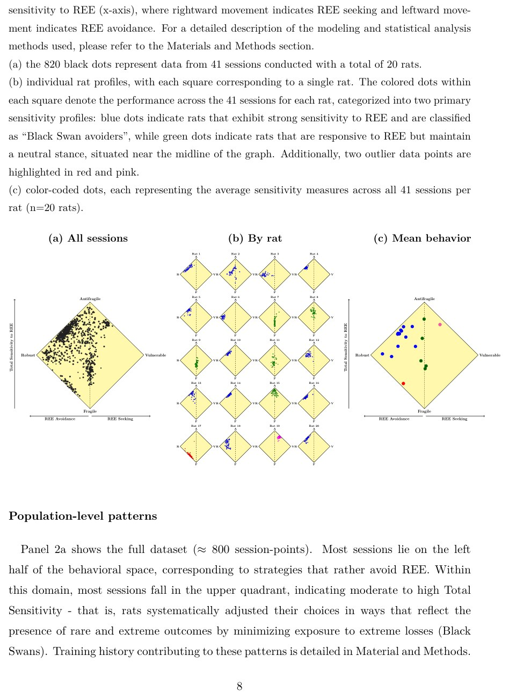
Первичный осмотр Рис. 2 показывает, что ни одно животное не действует в пределах единственной вершины — то есть ни одна крыса не придерживается исключительно одной контингентности. Вместо этого все животные используют несколько опций, формируя распределённые поведенческие профили, а не категориальные стратегии. Такая диверсификация качественно согласуется с данными естественного фуражирования, в условиях которого животные хеджируют риски неопределенности или экстремальных событий ([5, 40, 43, 48]).
Паттерны на уровне популяции
Панель 2a демонстрирует полный набор данных (≈ 800 точек сессий). Большинство сессий располагается в левой половине поведенческого пространства, что соответствует стратегиям, скорее избегающим REE. Внутри этого домена большинство сессий попадает в верхний квадрант, указывая на умеренную или высокую общую чувствительность — то есть крысы систематически корректировали свой выбор так, чтобы учитывать наличие редких и экстремальных исходов путем минимизации воздействия экстремальных потерь (чёрных лебедей). История обучения, способствующая формированию таких паттернов, подробно описана в разделе «Материалы и методы».
Важно
Популяционный уровень: большинство сессий (≈ 800 точек от 20 крыс) сосредоточено в левом верхнем квадранте поведенческого пространства, что свидетельствует об умеренной или высокой общей чувствительности к экстремальным событиям и выраженном стремлении избегать катастрофических потерь.
Индивидуальные поведенческие профили
Панель 2b отображает паттерн каждой отдельной крысы за 41 сессию. Каждый квадрат соответствует одной крысе, а четыре вершины соответствуют четырём возможным распределениям исходов (A: антихрупкие; R: робастные; V: уязвимые; F: хрупкие). За исключением одного животного (крыса 17, красный цвет), все крысы демонстрируют умеренную или высокую общую чувствительность. Внутри этой доминирующей группы выделяются две подгруппы (синяя и зелёная). Второй выброс, крыса 19 (фиолетовый цвет), является единственным животным, проявляющим как очень высокую общую чувствительность, так и сильное стремление к джекпотам (Jackpot Seeking), что достигается за счет чередования преимущественно антихрупких и, реже, уязвимых опций.
Оставшиеся 18 животных делятся на два стабильных фенотипа: 1) Синяя группа (13 крыс): эти животные в основном колеблются между робастной и антихрупкой опциями. Данный фенотип объединяет (i) умеренную или высокую общую чувствительность с (ii) ярко выраженным избеганием чёрных лебедей. Другими словами, эти крысы предпочитают избегать экстремальных наказаний в большей степени, чем стремятся к экстремальным наградам. 2) Зелёная группа (5 крыс): эти крысы преимущественно чередуют хрупкую и антихрупкую опции. Они демонстрируют умеренную или высокую общую чувствительность, но не проявляют направленного смещения в односторонней чувствительности, что указывает ни на последовательное избегание экстремальных потерь, ни на активный поиск экстремальных наград. Их выбор симметричен в отношении REE в доменах выигрыша и проигрыша.
Средние фенотипы
На Рис. 2c суммированы средние показатели каждой крысы по сессиям. У всех крыс, кроме четырёх, средняя общая чувствительность превышает половину максимального значения; у трёх она находится чуть ниже единицы, а у одной крысы (крыса 17) значение держится около 0.5, что делает её наиболее близкой к хрупкому паттерну, хотя она всё ещё отклоняется от истинного хрупкого поведения.
В общей сложности 19 из 20 крыс проявляют чёткую чувствительность к присутствию REE. Панель 2c также выявляет выраженное доминирование избегания чёрных лебедей (отрицательная односторонняя чувствительность) у большинства животных. Крысы 17 и 19 выступают противоположными выбросами: у крысы 17 общая чувствительность низкая, тогда как крыса 19 демонстрирует наибольшую общую чувствительность в сочетании с сильным поиском джекпотов. Внутри большинства из 18 крыс два основных описанных фенотипа чётко различаются: зелёная подгруппа не имеет одностороннего смещения, в то время как синяя подгруппа демонстрирует выраженное избегание чёрных лебедей. Количественные значения приведены в дополнительном материале: «Поведенческие показатели на одну крысу» (Behavioral Measures per Rat).
Осторожно
Ограничение модели: результаты получены на выборке из 20 крыс в искусственных условиях оперантной камеры, а индивидуальная вариабельность включает ярких аутсайдеров (крысы 17 и 19), что требует осторожности при экстраполяции на более широкие поведенческие парадигмы.
Структура связи между общей и односторонней чувствительностью
Характерной особенностью на панели 2c является положительная взаимосвязь между общей чувствительностью (Total Sensitivity) и односторонней чувствительностью (One-sided Sensitivity) среди 16 крыс с наибольшей общей чувствительностью. В этой группе высокой чувствительности животные, которые сильнее учитывают редкие события (REE) при выборе, склонны демонстрировать сниженное избегание «Черных лебедей» (то есть их односторонняя чувствительность становится менее отрицательной). Это смещение отражает прогрессивный сдвиг в сторону выпуклости в области выигрышей по сравнению с областью проигрышей. Крыса 19 представляет собой экстремальный случай, приближающийся к максимальному сочетанию общей чувствительности и поиска джекпота. Эта связь подтверждена статистически: во всем наборе данных из 20 крыс корреляция между средней общей и односторонней чувствительностью близка к нулю. Однако при ограничении анализа 16 крысами с высокой чувствительностью коэффициент корреляции составляет ≈ 0.57. В процессе обучения эта связь укрепляется: при разделении 41 сессии на четыре блока по 10 сессий корреляция увеличивается с ≈ 0.17 вначале до ≈ 0.56, ≈ 0.71 и ≈ 0.64 в последующие эпохи. Таким образом, структура, связывающая общую и одностороннюю чувствительность, возникает на ранних этапах и со временем стабилизируется.
Важно
У 16 крыс с высокой чувствительностью связь между общей и односторонней чувствительностью со временем укрепляется, а корреляция возрастает от ≈ 0.17 до ≈ 0.64, отражая устойчивый сдвиг в оценке рисков.
Поведенческие показатели поиска наград и избегания наказаний
На рис. 3 представлены более интуитивные поведенческие метрики: доля выборов, которые (i) избегают «Черных лебедей» и (ii) ищут джекпоты (подробный расчет описан в методах). Медианные значения демонстрируют резкую диссоциацию между двумя фенотипами. Примерно половина синих крыс избегает экстремальных наказаний более чем в 90% попыток, в то время как лишь ≈ 40% зеленых крыс и ни один из выбросов не достигают сопоставимого уровня избегания. В контрасте с этим поиск джекпота не различается между синими и зелеными крысами. Парные тесты Вилкоксона подтверждают это: синие крысы достоверно различаются по избеганию наказаний и поиску наград (p = 0.0002), тогда как зеленые крысы — нет (p = 0.6250). Два выброса расходятся в противоположных направлениях: крыса 17 стремится к почти максимальному воздействию джекпота, а крыса 19 почти полностью исключает его. Точные значения приведены в дополнительном материале.
Пояснение
Статистический тест Вилкоксона применяется для сравнения связанных пар выборок без требования нормальности распределения данных.
Воздействие редких событий и отсутствие воздействия: исходы «Черных лебедей» усиливают чувствительность к редким и экстремальным событиям, тогда как джекпоты — нет
Установив, что большинство животных (19/20) проявляют умеренную или высокую общую чувствительность к редким событиям (REE) и надежное избегание экстремальных наказаний («Черных лебедей»), авторы исследовали, как реальный опыт столкновения с REE формирует последующее поведение в рамках той же сессии. В частности, сравнивалась поведенческая чувствительность каждой крысы за 10 нос-поков до REE с 10 нос-поками после него. Рис. 4 суммирует эту динамику внутри сессий. Для каждой крысы (с цветами, как на рис. 2) на панели 4а показаны эффекты опыта джекпота, а на панели 4b — эффекты столкновения с «Черным лебедем». Общая чувствительность отложена в левой колонке, а односторонняя чувствительность (относительный вес экстремальных потерь по сравнению с выигрышами) — в правой. Пунктирная диагональ указывает на отсутствие изменений.
Осторожно
Наблюдаемые поведенческие сдвиги получены на экспериментальной модели грызунов, и их прямая экстраполяция на сложные экономические решения человека требует осторожности.
Проявляется четкая асимметрия: джекпоты производят минимальные изменения в любой из метрик, причем большинство точек лежат близко к диагонали. Напротив, исходы с «Черными лебедями» систематически сдвигают поведение. Большинство животных демонстрируют увеличение общей чувствительности — то есть они становятся более восприимчивыми к структуре редких событий — наряду со снижением односторонней чувствительности, что отражает дальнейший сдвиг в сторону избегания экстремальных потерь. По обеим метрикам точки группируются выше (общая чувствительность) или ниже (односторонняя чувствительность) линии 45^°, указывая на стабильное усиление поведенческого веса REE после наказания, но не после награды. Таким образом, редкие и тяжелые потери — но не редкие выигрыши — остро потенцируют чувствительность животных к REE.
Этот паттерн согласуется с общим выводом о том, что крысы отдают приоритет избеганию экстремальных негативных исходов и что негативные REE оказывают несоразмерное влияние на обновление выбора. Бутстреп-статистика и дополнительные тесты в методах (см. Таблицу 3) подтверждают значимость этих эффектов. В резюме, анализ внутри сессий выявляет сильную валентную асимметрию: события «Черных лебедей» транзиторно усиливают как глобальную чувствительность к REE, так и предвзятость к избеганию редких потерь, тогда как джекпоты измеримо не изменяют поведенческую чувствительность. Это предполагает, что редкие аверсивные исходы оказывают доминирующее влияние на процессы принятия решений в данной задаче, подкрепляя фенотип повышенной бдительности к экстремальным негативным событиям.
Таблица 3. Различия до/после для общей чувствительности к REE и односторонней чувствительности к REE
| Крыса | Общая чувствительность к REE / джекпот | Общая чувствительность к REE / черный лебедь | Односторонняя чувствительность к REE / джекпот | Односторонняя чувствительность к REE / черный лебедь |
|---|---|---|---|---|
| • 1 | -0.062 | -0.133 | -0.046 | -0.467 |
Мы усреднили по 41 сеансу для каждой из 20 крыс. Красным цветом выделены отрицательные средние различия, а желтым — положительные средние различия.
Модели Q-обучения (Q-Learning) требуют специфических весов принятия решений REE для имитации поведения крыс
Для моделирования поведения крыс исследователи применили новый класс расширенных моделей подкрепленного обучения (Reinforcement Learning), оценив их параметры на основе реальных выборов и результатов каждого животного. Ключевой особенностью выбранной модели стало разделение обычных и редких экстремальных исходов через специальные веса в процессе принятия решений. Введение такой чувствительности обеспечивает отличное соответствие модели и поведения крыс, в то время как стандартная модель Q-learning без учета REE отвергается почти для всех особей.
Для каждого из четырех доступных вариантов выбора, обозначенных индексом o от 1 до 4 (соответствующих стратегиям Antifragile, Fragile, Robust, Vulnerable) в уравнениях (1), в каждый моменты времени/испытания присваиваются подзначение выигрыша Q_g^t(o) и подзначение проигрыша Q_l^t(o). Их обновление описывается формулами:
Q_g^t+1(o) - Q_g^t(o) = α_g × [r_g^t(o) - Q_g^t(o)] Q_l^t+1(o) - Q_l^t(o) = α_l × [r_l^t(o) - Q_l^t(o)]
где параметры α_g и α_l представляют собой скорости обучения, определяющие темп обновления ошибки предсказания вознаграждения. Если скорость обучения равна нулю, обновление не происходит; если равна единице, подзначение полностью отражает полученную награду. Для невыбранных трех вариантов действуют правила забывания с коэффициентами αfg и αfl, где Q_g^t+1(o) = (1 - αfg)Q_g^t(o) и Q_l^t+1(o) = (1 - αfl)Q_l^t(o).
Пояснение
Q-learning и коэффициенты обучения — это алгоритм машинного обучения и параметры, которые показывают, насколько быстро животное или модель корректируют свои ожидания на основе свежего опыта побед или поражений.
Новой чертой расширенной модели, помимо разделения выигрышей и потерь, является введение специфических весов для опций, способных порождать редкие экстремальные события (REE). Общая ценность каждого варианта V_t(o) рассчитывается в уравнении (2) как сумма двух слагаемых. Первое слагаемое учитывает взвешенные подзначения выигрышей и потерь с коэффициентами λ_g и λ_l. Второе и главное слагаемое фиксирует веса принятия решений для REE, которые в свою очередь подразделяются на веса для «Джекпотов» (Jackpots) и «Черных лебедей» (Black Swans).
Индикаторная функция 1JP(o) равна единице, если выбранная опция (A или V) подвержена риску Джекпотов, и нулю в противном случае. Аналогично, функция 1BS(o) равна единице при экспозиции варианта к Черным лебедям.
Важно
Успешная имитация поведения крыс требует моделей Q-learning со специальными весами решений для редких экстремальных событий (REE), разделяющими обычные исходы и экстремальные «Джекпоты» с «Черными лебедями».
Обсуждение
Асимметричные поведенческие реакции на редкие экстремальные проигрыши и выигрыши
Мы продемонстрировали, что все крысы в нашей выборке в определенной степени чувствительны к редким экстремальным событиям (REE), причем у большинства животных уровень этой чувствительности средний или высокий. Был выявлен доминирующий поведенческий фенотип, который сочетает практически полное избегание «Черных лебедей» и частичный поиск «Джекпотов». Авторы объясняют эти паттерны фундаментальной асимметрией между положительными и отрицательными REE, хотя учитывают и определенные оговорки. В частности, нельзя полностью исключить, что насыщение могло повлиять на отсутствие абсолютного стремления к «Джекпотам», однако на практике исследователи не фиксировали животных, которые полностью прекращали бы их поиски. Поскольку редкие исходы запрограммированно возникали либо на 10-й, либо на 60-й активации за сессию (см. Таблицу S1 в дополнительных материалах), возникает вопрос, могли ли животные выучить эту закономерность. Если бы крысы осознали приуроченность REE к 10-й и 60-й активациям, их стратегия выбора была бы более оптимизированной. Например, опции с возможностью сорвать «Джекпот» не являются оптимальными по частым выигрышам, поэтому животные выбирали бы их преимущественно около 10-й и 60-й попыток, а в остальное время отдавали предпочтение опциям с крупными частыми выигрышами. Однако экспериментально наблюдалось совсем другое поведение.
Таблица S1. Положение REE в последовательности
| # | Джекпот | Черный лебедь |
|---|---|---|
| 1 |
Важно
Крысы демонстрируют фенотип, объединяющий почти полное избегание «Черных лебедей» и частичный поиск «Джекпотов», что отражает асимметрию восприятия редких потерь и выигрышей.
В нашей задаче избегание «Черных лебедей» требует согласия на более долгие частые задержки, а охота за «Джекпотами» — отказа от более крупных частых приобретений. При этом крысы могут гарантировать защиту от «Черных лебедей», выбирая выпуклые графики убытков, что делает такие опции привлекательными. Напротив, ни одна последовательность выборов не гарантирует получение «Джекпота», так как его реализация зависит исключительно от редких случайных выпадений. Для наглядности: если в сессии делается 150 выборов (в пределах наблюдаемого диапазона), а априорная вероятность REE составляет 1%, то по приближению Пуассона вероятность увидеть ровно одно такое событие равна примерно 78%, оставляя немалый шанс и на нулевое появление. Данная схема отражает общую закономерность: в то время как экстремальных потерь в принципе можно полностью избежать, гарантировать экстремальные выигрыши нельзя даже при постоянном оптимальном поиске. Эта асимметрия существенно влияет на выбор животных. Крысы постоянно получают поток данных из зоны частых исходов, указывающий на вогнутые варианты как на локально оптимальные. В частности, «хрупкая» опция (Fragile) приносит повышенные частые доходы и меньшие частые убытки, стохастически доминируя над остальными вариантами в отсутствие REE. Хотя при одновременном наступлении «Черного лебедя» и «Джекпота» «хрупкая» опция проигрывает «антирупкой» (Anti-fragile), гарантированное избегание «Черного лебедя» обеспечивает защиту от катастрофических потерь. Это делает привлекательными стратегии, совмещающие «антирупкие» и «надежные» (Robust) опции, несмотря на нарушение стохастического доминирования в области частых исходов: стохастическое доминирование на уровне всей системы в итоге соблюдается. Напротив, полный поиск «Джекпота» менее привлекателен, поскольку он не гарантирует сам выигрыш, а издержки в виде меньших наград на большинстве испытаний неоправданны, если компенсаторный экстремальный бонус так и не происходит. Частичный поиск «Джекпота» становится более сбалансированным компромиссом.
Пояснение
Стохастическое доминирование — ситуация, когда одна стратегия объективно выгоднее другой при любых условиях; в эксперименте животные балансируют между частыми мелкими наградами и редкими крупными рисками.
Наши результаты показывают, что «синие» крысы усвоили это свойство, объединяя надежные и антирупкие опции для почти стопроцентного избегания «Черных лебедей» при частичном поиске «Джекпотов». Напротив, «зеленые» особи продолжают смешивать антирупкие и хрупкие опции, оставаясь уязвимыми к «Черным лебедям». Интересно, что поскольку крысы не зацикливаются на каком-то одном выборе, а проявляют гибкость стратегии, можно полностью исключить влияние пространственной предвзятости как главного фактора их решений. Более того, дизайн задачи изначально имел два методологических смещения: любимое отверстие в ходе обучения закреплялось за антирупкой опцией в качестве проверки концепции, а REE происходили на 10-м и 60-м выборе при условии правильного решения. Поскольку большинство крыс диверсифицировали свои действия, это смещение расположения не помешало животным освоить все опции. Могло ли возникнуть понимание 10-го и 60-го шагов доставки REE? Если бы это было так, наблюдался бы сдвиг в сторону вариантов с максимальными частыми наградами и минимальными потерями с коррекцией ровно на указанных испытаниях, чего никогда не фиксировалось.
Осторожно
Наблюдаемые поведенческие стратегии формируются в условиях специфического экспериментального дизайна с фиксированными точками редких событий, что требует осторожности при экстраполяции на другие когнитивные задачи.
Теоретически, поскольку частые исходы происходят постоянно, животные должны были относительно быстро обнаружить стохастическое доминирование в этой области. Однако предыдущие работы показывают, что на это уходит множество сеансов (например, [59], [3]). Полученные нами данные предлагают возможное объяснение: требуется значительный опыт, чтобы животные осознали факт отсутствия REE и смогли исключить их из оцениваемого распределения.
Дополненные модели Q-обучения указывают на специфический нервный путь для кодирования редких экстремальных событий
На данном этапе закономерно возникает вопрос о том, отражают ли наши результаты неприятие потерь или неприятие неопределенности. Хотя большинство исследований не фокусируются на редких экстремальных событиях (REE), задачи, включающие как положительные, так и отрицательные исходы, обычно демонстрируют неприятие потерь в соответствии с теорией перспектив. Однако модели на базе этого подхода хуже описывают поведение крыс в задачах исключительно с вознаграждениями, где проигрыши соответствуют отсутствию приза, а не наказанию. Эмоциональные механизмы и тревожность также могут играть роль, потенциально задействуя базолатеральную миндалевидную тело, которая у крыс связана с дифференцированной оценкой негативных исходов. Неприятие неопределенности у животных изучено мало. Наши результаты предварительно показывают, что крысы могут демонстрировать снижение неопределенности в отношении REE: сочетание почти полного избегания «Черных лебедей» с лишь частичным поиском «Джекпотов» сводит вероятность выборки «Черных лебедей» почти к нулю, удерживая вероятность выборки «Джекпотов» в диапазоне между нулем и \varepsilon.
Важно
> Поведение крыс указывает на асимметричную обработку экстремальных исходов: модели Q-обучения с явной чувствительностью к REE точно воспроизводят сильное отвращение к «Черным лебедям», отличающее «синий» фенотип от «зеленого».
Хотя волнообразный эффект свежести описан в экспериментах на людях, анализ до и после, приведенный на Рис. 4, показывает отсутствие значимого непосредственного эффекта свежести для «Джекпотов» у крыс. Даже для «Черных лебедей» непосредственный эффект свежести остается умеренным при использовании окна в 10 попыток, а анализ выбора сразу после REE не выявляет следов немедленного негативного эффекта свежести. Хотя дальнейшее изучение выходит за рамки данной работы, перспективным направлением видится анализ взаимодействующих эффектов свежести «Джекпотов» и «Черных лебедей». Также отметим, что конструкция задачи не позволяет крысам полностью избежать негативных редких событий, если они не прекратят выполнение задания вовсе — паттерн, типичный для парадигм с аверсивными стимулами вроде ударов током. Тот факт, что все 20 крыс сохраняли стабильную работоспособность на протяжении 41 сеанса, свидетельствует против выраженного «эффекта горячей сковороды».
Пояснение
> «Черные лебеди» и «Джекпоты» в данном контексте — это крайне редкие и масштабные отрицательные или положительные события, в отличие от частых мелких наград.
Дополненные модели Q-обучения предполагают специфический нервный путь для кодирования REE
Плотное прилегание и предсказательная точность дополненной модели Q-обучения для доминирующего поведенческого фенотипа указывают на новую нейробиологическую гипотезу. В рамках этого подхода 11 из 13 крыс из синей группы (согласно материалам и методам) исключают REE из обновления Q-значения, но демонстрируют особую чувствительность к «Черным лебедям» через отрицательный параметр γ_l. Иными словами, оценивая доступные действия, крысы «синего» фенотипа не интегрируют «Черные лебеди» в общую бегущую среднюю потерь, а присваивают им особый вес решения, снижая субъективную ценность вариантов с такими экстремальными потерями.
Осторожно
> Выводы о нейронных механизмах получены с помощью математического моделирования поведения крыс, и прямая экстраполяция на мозг человека требует дальнейших электрофизиологических или нейровизуализационных подтверждений.
У людей редкие и экстремальные стимулы несоразмерно более заметны в восприятии и памяти по сравнению с умеренными. Наши поведенческие и модельные результаты показывают, что крысам свойственна схожая когнитивная предвзятость. Это поднимает вопрос о том, что кодирование REE может опираться на нейронные механизмы, отличные от обработки частых малых наград, традиционно связываемых с дофаминовыми нейронами, стриатумом и кортексом (передняя поясная и глазнично-лобная кора). Где и как REE кодируются в мозге — открытый вопрос. Если интеграция REE требует учета долгосрочных или низкочастотных исходов, выходящих за рамки коротких горизонтов награждения (например, как в работе [56]), кандидатами могут быть передняя инсула и миндалевидное тело. Последнее, учитывая его роль в эмоциональной значимости, выступает правдоподобным субстратом для аверсивных и непредсказуемых исходов, смещающих выбор в сторону негативных событий. С вычислительной точки зрения статистически рационально не примешивать экстремальные выбросы к среднему значению распределения, чтобы не дестабилизировать оценку. Аналогично, адаптивное принятие решений выигрывает от раздельного учета REE и частых исходов, а также разных весов для «Черных лебедей» и «Джекпотов». Если подобное кодирование дает эволюционные преимущества в нестабильной среде, должны были эволюционировать специализированные нервные механизмы. Насколько нам известно, эта гипотеза еще не тестировалась напрямую в нейронауке, и ее проверка станет важным направлением будущих исследований в русле концепции вычислительной валидности.
Значение для человека
Результаты экспериментов на крысах открывают перспективы для трансляционных исследований, позволяя проверить, свойственно ли людям избегать вредных редких экстремальных событий (REE) и стремиться к полезным. Авторы уже адаптируют методику для людей, исключая редкие, но не экстремальные исходы, так как сочетание редкости и крайности является ключевым. Предварительные данные показывают, что поведенческие фенотипы крыс воспроизводятся у людей в аналогичных условиях, указывая на REE как на главный драйвер поведения. Подобные задачи могут применяться для оценки профилей принятия решений у профессионалов, например пожарных, а также для изучения уязвимости к зависимости у пациентов. В контексте антропоцена климатические и экологические кризисы порождают редкие катастрофические события, угрожающие вымиранию видов. Возникает вопрос: почему человечество исторически склонно к поведению, увеличивающему воздействие разрушительных REE, и отклоняется ли оно от стратегии избегания черных лебедей? Хотя избегание REE адаптивно, эволюционные доказательства этого ограничены, создавая парадокс: люди создают опасные среды, но могут ли они иметь когнитивные ограничения для распознавания предвестников опасностей, таких как выпуклость в эксперименте?
Важно
Большинство крыс успешно выбирали стратегии, минимизирующие вредные REE при доступе к полезным джекпотам, что опровергает пессимистичные взгляды на когнитивную неспособность людей справляться с рисками.
К счастью, результаты экспериментов на крысах не подтверждают пессимистичные гипотезы. Значительная индивидуальная вариативность указывает на то, что люди, вероятно, разделяют схожие поведенческие паттерны с животными, а не обладают уникальным дефицитом. Большинство крыс стабильно выбирали опции, почти исключающие вредные REE с сохранением доступа к полезным джекпотам, образуя крупнейшую адаптивную подгруппу. Выдвигается гипотеза, что многие люди также способны избегать вредных и преследовать полезные экстремальные исходы. Подобная гетерогенность чувствительности к REE внутри видов ставит вопросы о влиянии индивидуальных различий на популяционную динамику, социальные структуры и коллективное принятие решений.
Подопытные животные
В исследовании использовали взрослых самцов крыс линии Lister Hooded (n = 20, масса тела около 200 г на момент прибытия, поставщик Charles River). Животных содержали группами по две особи в плексигласовых клетках в условиях контролируемой температуры и влажности. Был установлен инвертированный цикл день/ночь продолжительностью 12 часов с началом световой фазы в 19:00, при этом доступ к воде был свободным ad libitum. Кормление животных слегка ограничивали, поддерживая массу на уровне примерно 80% от суточного потребления. Все процедуры по уходу и содержанию соответствовали французскому регламенту (декрет 2010-118) и были одобрены локальным этическим комитетом и Министерством сельского хозяйства Франции под номером 03129.01.
Пояснение
Использование стандартизированных лабораторных животных (например, крыс Lister Hooded с контролируемым рационом) позволяет минимизировать генетические и средовые шумы при изучении сложных когнитивных стратегий.
Оборудование
Все поведенческие эксперименты проводились в темную фазу суток с использованием стандартных оперантных камер с пятью отверстиями производства MedAssociates, размещенных в вентилируемых звукоизоляционных шкафах. На одной из стен каждой камеры располагались центральный домашний свет, генератор звуковых сигналов и пищевой отсек, оснащенный инфракрасным лучом для регистрации носу-поков. Сахарные пеллеты массой 20 мг производства Bio-Concept Scientific доставлялись из внешнего дозатора. На противоположной изогнутой стене находился массив из пяти отверстий для ответов, каждое из которых было снабжено световыми стимулами и инфракрасными датчиками для фиксации носу-поков. Центральное отверстие оставалось постоянно закрытым на протяжении всех экспериментов (Рис. 1a). Сбор данных осуществлялся на персональном компьютере с использованием программного обеспечения MedPC-IV.
Поведенческое обучение и тестирование
Поведенческое обучение и тестирование включали пять последовательных фаз, предшествовавших финальному тестированию, как показано на Рис. 7 (см. также Таблицу S3). Каждая сессия запускалась включением общего освещения в камере (house light). На первой фазе животные осваивали сбор пищевых подкреплений: в течение трех ежедневных 30-минутных сессий (максимум 100 пеллет) крысы собирали сахарозные пеллеты в специальном отсеке (food magazine) по схеме непрерывного подкрепления FR1, где один тык носом (nose-poke) приводил к выдаче одной пеллеты. Тыки в любые другие отверстия на этом этапе не имели запрограммированных последствий. На второй фазе грызуны обучались тыкам носом в отверстия: был доступен только один орафис, три остальных перекрывали, а сессии длились по 20 минут. Один тык в открытое отверстие зажигал его подсветку и давал одну пеллету, тогда как персеверативные тыки (до сбора еды) игнорировались; после сбора можно было повторять тык. Всего проводилось по две тренировки на каждое из четырех отверстий (максимум 100 пеллет за сессию).
Таблица S3. Последовательность событий для каждой последовательности
| # | Последовательность событий |
|---|---|
| 1 | 2,-1,-2,-2,2,1,2,-1,2,1,-2,1,2,-1,-3,1,-1,-2,-2,-1,1,1,3,1,1,1,1,-1,1,-2,2,-1,-2,1,-3,-1,2,-1,-2,-1,-1,1,2,-1,-3,1,-3,-1,-2,-1,-2,1,2,2,-1,-1,-2,1,2,1,-1,1,2,-3,-2,-1,-1,-1,-1,-1,-3,-1,-2,-1,-2,-1,-2,-1,3,-2,2,2,-1,1,-1,1,-2,1,-2,1,-2,1,2,1,-1,-2,1,1,1,-1,1,2,2,-1,1,-1,2,-1,1,-1,-2,2,2,1,1,-1,1,1,-2,1,3,1,-1,1,1,1,-2,1,-2,1,-2,-1,2,-1,2,-1,-1,-1,1,-1,1,-1,2,1,-2,1,-2,-1,2,-1,-1,-1,-1,1,-2,1,-1,-1,-3,2,2,2,2,-1,-2,-1,-2,1,3,1,2,1,-1,1,2,-1,-3,1,2,1,-2,-2,1,1,-3,-1,1,1,-2,1,2,2,-3,1,1,-1,3,-2,-2,1,2,-1,2,1,-2,1,-1,2,-1,-1,-3,2,2,-2,2,1,-1,-1,2,-1,-2,1,2,-1,3,1,1,1,-2,2,-3,1,-2,1,2,1,-1,-1,2,1,3,-1,-3,1,-1,1,1,-1,-1,-2,-3,-1,-3,1,1,1,-1,1,-2,-1,3,-1,1,1,-2,2,-3,-1,1,1,2,-1,-2,1,2,1,3,-1,-2,2,1,2,-1,1,-1,1,2,-1,3,-1,-2,-2,-1,-1,-1,-1,1,-1,1,1 |
На третьей фазе животные тренировались со всеми четырьмя отверстиями в течение двадцати 20-минутных ежедневных сессий. Тык в любое отверстие зажигал его лампу и выдавал сахарную пеллету, а повторные или неверные тыки не наказывались. Первые десять сессий ограничивались 100 пеллетами, а следующие десять позволяли собирать до 200 пеллет за сессию. На четвертой фазе исследователи определяли пространственные предпочтения каждой крысы по доле активаций каждого отверстия за последние десять сессий. Меню распределялись по отверстиям для поощрения антихрупких выборов (Anti-fragile): антихрупкое воздействие соотносили с наиболее предпочитаемым отверстием, робастное (Robust) — со вторым по предпочтению, уязвимое (Vulnerable) — с третьим, а хрупкое (Fragile) — с наименее предпочитаемым.
Пояснение
> Схема FR1 (fixed ratio 1) означает непрерывное подкрепление, когда каждое правильное действие животного сразу вознаграждается, а выбор отверстий привязывается к индивидуальным предпочтениям крыс.
На пятой фазе проводилось обучение самим воздействиям (exposures). Сначала животные осваивали область выигрышей (gain domain) без наказаний в виде тайм-аутов для каждого меню через восемь 20-минутных сессий с неограниченными пеллетами и по одному доступному отверстию. Для вариантов Anti-fragile и Vulnerable использовали две последовательности, где джекпот выпадал на 10-й и 60-й активации (Таблица S1), чтобы все особи застали и ранний, и поздний джекпот. Затем животным открыли все четыре отверстия на 920-минутных сессиях с разными поведенческими последовательностями. Перед освоением области потерь (loss domain) крыс приучали к мягкому постоянному 3-секундному тайм-ауту: половина активаций приводила к паузе со звуковым сигналом в 3 секунды и гашением света в камере, в течение которой тыки не давали результатов. После девяти 20-минутных сессий вводили область потерь меню с аналогичными 3-секундными сигналами и погашением света. Сначала в течение четырех сессий были доступны только уязвимые и хрупкие отверстия (вогнутые потери), а затем еще четыре сессии — только антихрупкие и робастные отверстия (выпуклые потери). В итоге каждый участник испытал оба экстремальных события не менее четырех раз.
На шестой фазе проходили финальные тесты, в ходе которых животные свободно исследовали все меню на протяжении сорока 20-минутных сессий. Крысы четырежды проходили десять различных последовательностей, случайно распределенных по сессиям. Вся популяция из n = 20 особей была разделена на две группы, получавшие эквивалентные распределения типов последовательностей (Таблица S2). Временная шкала процедуры приведена на Рис. 7.
Осторожно
> Сложная многоэтапная поведенческая парадигма требует длительной подготовки животных (n = 20), а результаты зависят от жестко регламентированных последовательностей и пространственных предпочтений.
Взаимосвязь стохастического доминирования и взвешивания вероятностей
Обращение порядка стохастического доминирования второго порядка и соответствующей ценности во всей области стимулов явно поддерживает выбор в пользу выпуклых выигрышей. Это происходит тогда, когда экстремальные события, вероятность которых действительно крайне мала и составляет значительно менее 1%, добавляются в общую картину. Напротив, если редкие экстремальные события (REE) отсутствуют, добавления одного лишь RE недостаточно для предпочтения выпуклых выигрышей, хотя испытуемые при этом способны распознавать ускорение и замедление как для выигрышей, так и для убытков.
Важно
Добавление крайне редких экстремальных событий с вероятностью менее 1% смещает предпочтения в сторону выпуклых выигрышей, тогда как без них одного лишь RE для этого недостаточно.
Описанные закономерности полностью справедливы в рамках классической теории ожидаемой полезности, где общая ценность определяется как V(x, p) = \sumi=1n pi u(xi) при стандартных условиях на функцию полезности u. Данная функция должна быть неубывающей для доминирования первого порядка, а также неубывающей и вогнутой для доминирования второго порядка. Тем не менее, для более точного соответствия экспериментальным данным модель ожидаемой полезности всё чаще дополняется функциями взвешивания вероятностей w(p_i). Например, в работе [10] применяется двухпараметрическая форма весов, и авторы фиксируют, что 30 крыс из 36 действуют так, будто их функция весов вероятностей w(p_i) является вогнутой. В таком случае рассмотренные ex-ante свойства сохраняются с необходимыми поправками, в частности, в рамках модели ожидаемой полезности с учетом весов вероятностей, которая записывается как \sumi=1n w(pi) u(xi).
Пояснение
Теория ожидаемой полезности — классический экономический подход, где выбор человека определяется суммой полезности возможных исходов, умноженной на их вероятности.
Альтернативным подходом является рангово-зависимая ожидаемая полезность, где можно опереться на результаты из работы [25], чтобы показать сохранение описанных ex-ante свойств при условии, что преобразование функции кумулятивного распределения представляет собой любую возрастающую вогнутую функцию. Поскольку в рамках использованного экспериментального дизайна REE выступают одновременно и экстремальными значениями (будучи наибольшими величинами), и редкими событиями с очень низкими вероятностями, аналогичные результаты закономерно ожидаются как при взвешивании вероятностей, так и в рамках рангово-зависимой полезности или кумулятивной теории перспективы.
Осторожно
Теоретические модели и эксперименты на животных (например, на крысах) описывают вероятностное поведение, однако экстраполяция этих моделей на сложные экономические решения человека требует осторожности.
Теоретически использование весовой функции w(p_i), имеющей S-образную форму и сильную выпуклость в зоне больших выигрышей, потенциально могло бы изменить исходный рейтинг вогнутых и выпуклых экспозиций. Однако эмпирические результаты показывают, что для подавляющего большинства крыс, участвовавших в тех экспериментах, подобных сдвигов на практике не наблюдается.
{kind=link}
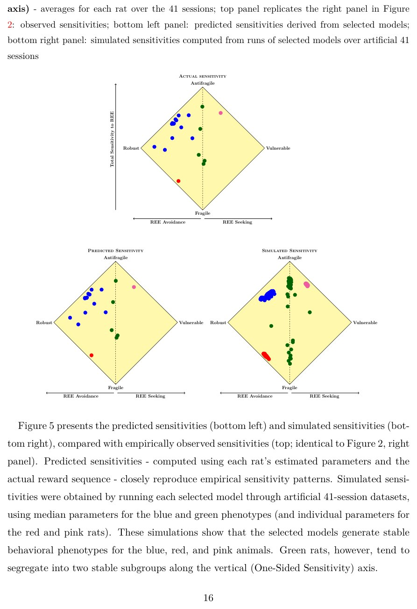
{kind=link}
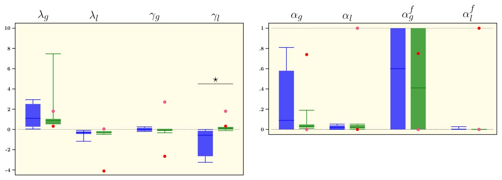
{kind=link}
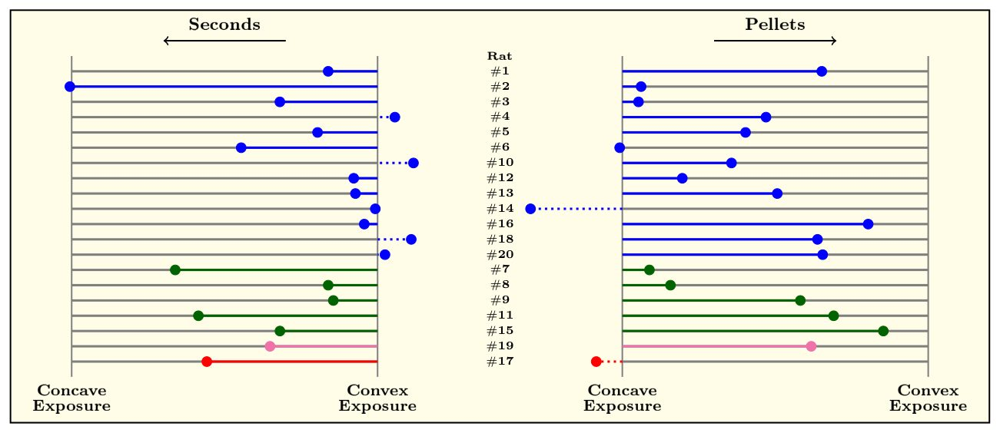
{kind=link}
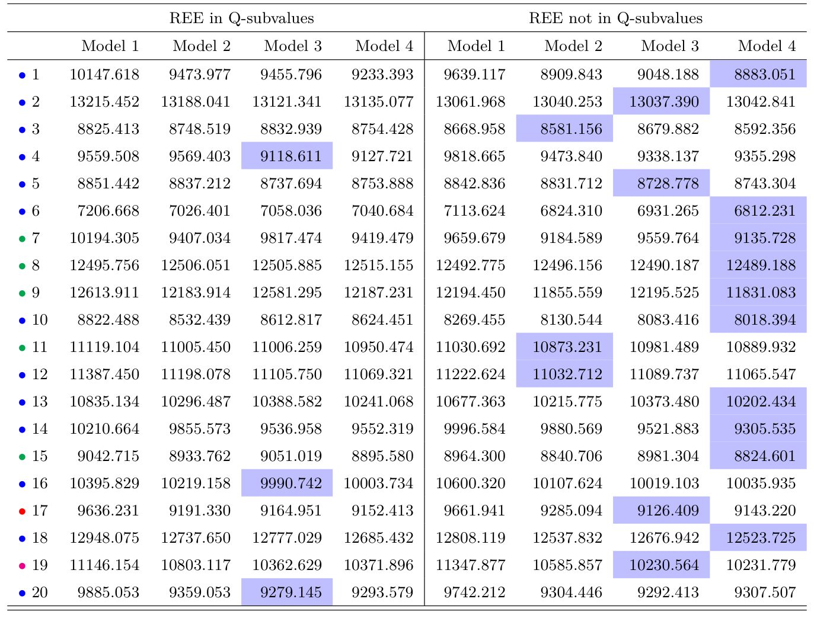
{kind=link}
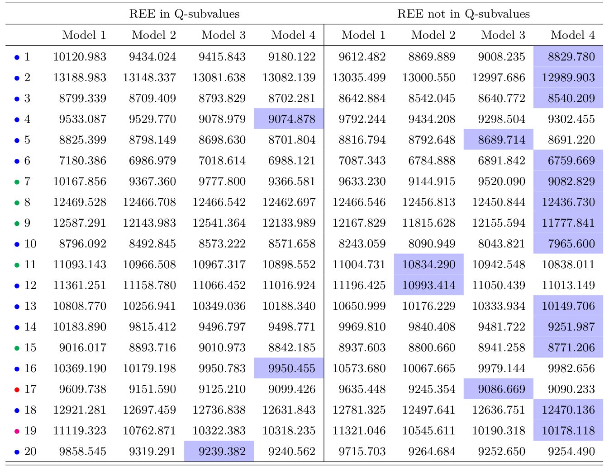
{kind=link}
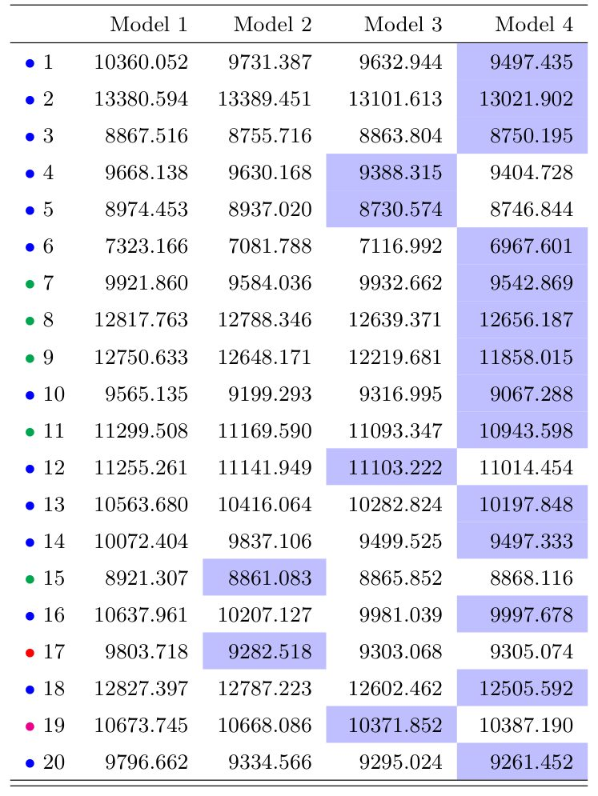
{kind=link}
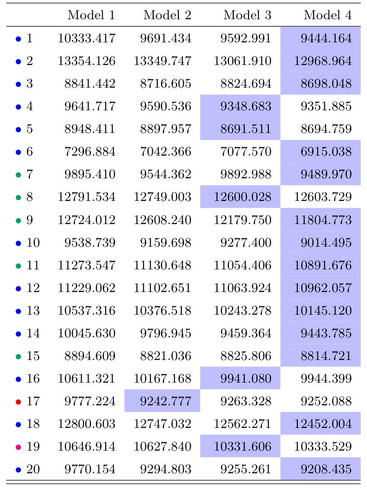
{kind=link}
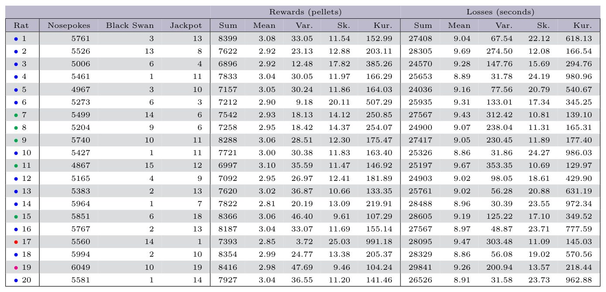
{kind=link}
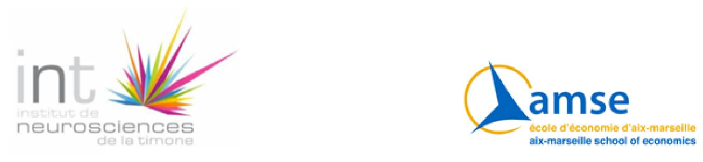
Таблицы
Таблица 2. Статистические моменты и разложение гэпов Дженсена для выпуклых и вогнутых экспозиций
| Подарок | Выпуклая экспозиция | Вогнутая экспозиция |
|---|---|---|
| Среднее | 3.89 | 3.11 |
Таблица S5. BIC values for all augmented Q-Learning models, with selected value highlighted
{kind=link}
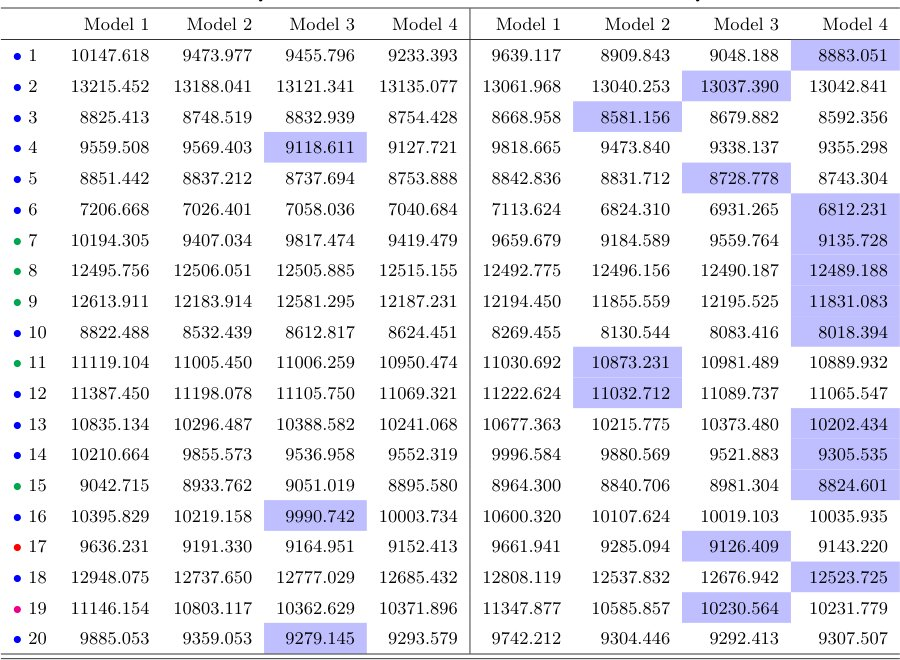
Таблица S6. AIC values for all augmented Q-Learning models, with selected value highlighted
{kind=link}
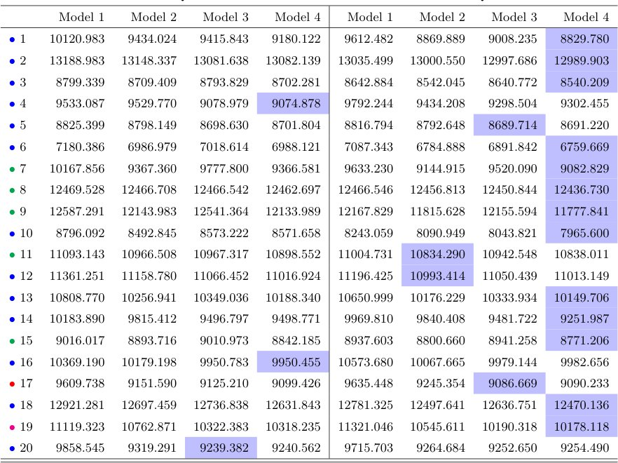
Таблица S9. BIC values for all augmented Q-Learning model with outcome range-adaptation, withselectedvaluehighlighted
{kind=link}
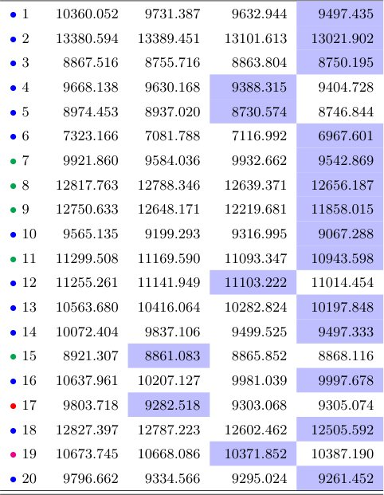
Таблица S10. AIC values for all augmented Q-Learning model with outcome range-adaptation, withselectedvaluehighlighted
{kind=link}
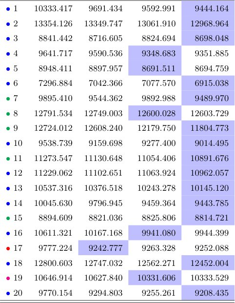
Схема исследования
Препринт не прошёл рецензирование. Выводы предварительные.
Источник
| Категория | Лицензия препринта |
|---|---|
| animal behavior and cognition | все права у авторов |
Источники
| Источник | Ссылка |
|---|---|
| Страница препринта | biorxiv.org |
| Полный текст (PDF) | biorxiv.org |
| DOI | doi.org |
| Метаданные Crossref | api.crossref.org |
| Europe PMC | europepmc.org |